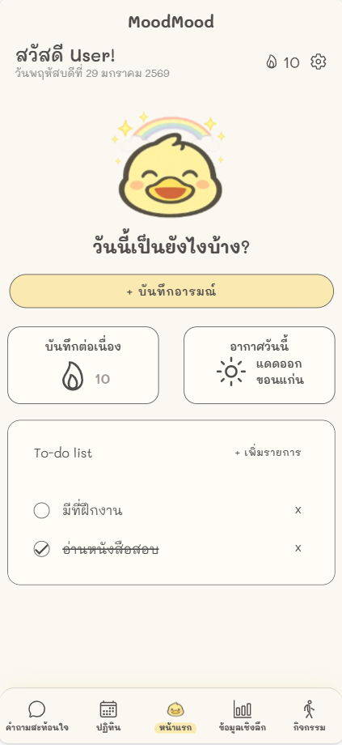
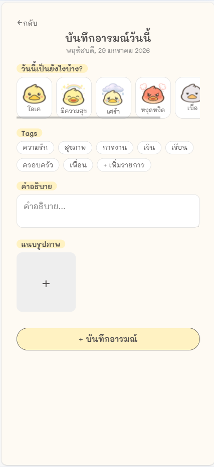
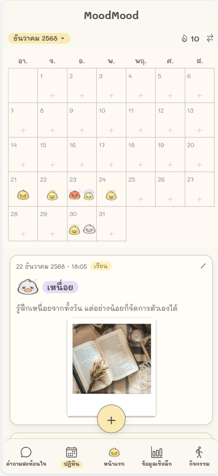
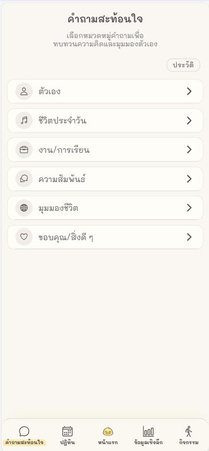

MoodMood - Personal Mood Journaling Web Application
December 2025 - Present • Ionic React, Node.js, MongoDBSuccessfully built a secure, real-time mood journaling platform with an intuitive dashboard, enabling users to track mental health trends through seamless data visualization.
Target: Develop a privacy-focused mental health web application to help users monitor daily moods, activities, and emotional patterns for self-awareness and well-being.
Action: Designed and developed a full-stack system including NoSQL data modeling, RESTful APIs, responsive UI, and secure PIN-based authentication.
Skills: Ionic Framework + React, Node.js (Express), MongoDB Atlas, Postman, Figma, GitHub.
Applied Theory: Implemented 3-Tier Architecture and advanced state management to deliver real-time emotional insights and statistical visualizations.
View GitHub Repository



